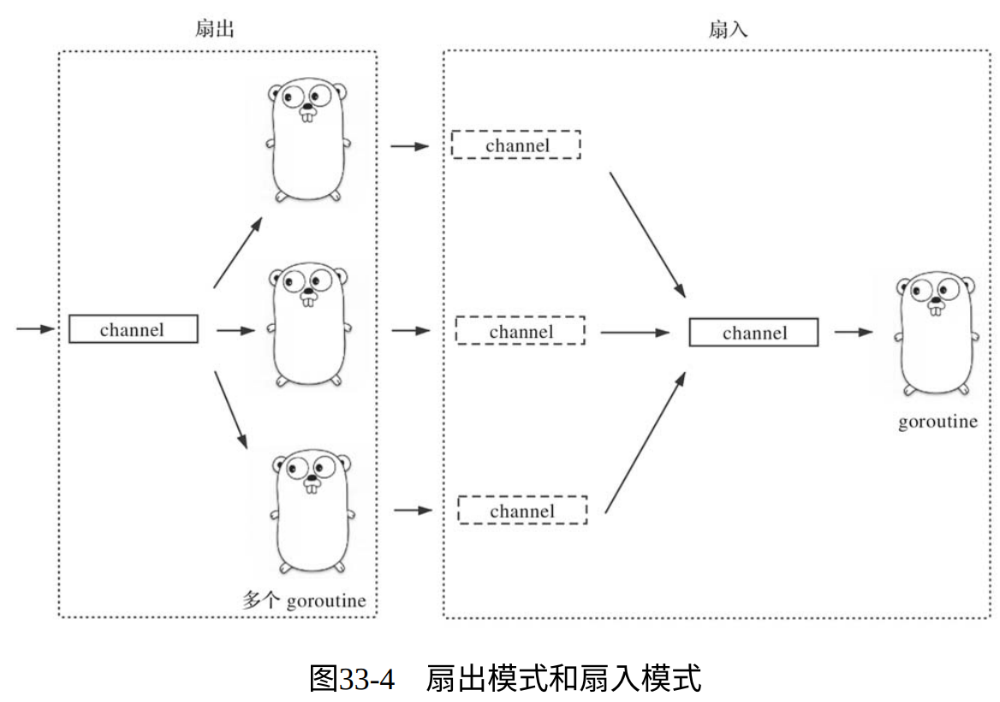

不要通过共享内存来通信，而应该通过通信来共享内存。
——Rob Pike，Go语言之父
1. Go并发模型
- 传统语言的并发模型是基于共享内存的模型，如下图所示。这种模型难用且易错：
- Go语言在新并发模型设计中借鉴了著名计算机科学家Tony Hoare提出的 CSP（Communicating Sequential Process，通信顺序进程）模型 ，如下图所示：
- CSP模型旨在简化并发程序的编写，让并发程序的编写与编写顺序程序一样简单。
- CSP理论中的P（Process，进程）是个抽象概念，它代表任何顺序处理逻辑的封装，它获取输入数据（或从其他P的输出获取），并生产可以被其他P消费的输出数据。
- 因此，在Tony Hoare眼中，一个符合CSP模型的并发程序应该是一组通过输入/输出原 语连接起来的P的集合。
为了实现CSP模型中的输入/输出原语，Go引入了goroutine（P）之间的通信原语channel。
goroutine可以从channel获取输入数据，再将处理后得到的结果数据通过channel输出。
- 虽然CSP模型已经成为Go语言支持的主流并发模型，但Go也支持传统的基于共享内存的并发模型，并提供基本的低级同步原语（主要是sync包中的互斥锁、条件变量、读写锁、原子操作等）。
- 但是Go始终推荐以CSP模型风格构建并发程序。不过对于局部情况，比如涉及性能敏感的区域或需要保护的结构体数据，可以使用更为高效的低级同步原语（如sync.Mutex）。
2. Go常见的并发模型
在语言层面，Go针对CSP模型提供了三种并发原语：
- goroutine：对应CSP模型中的P，封装了数据的处理逻辑，是Go运行时调度的基本执行单元。
- channel：对应CSP模型中的输入/输出原语，用于goroutine之间的通信和同步。
- select：用于应对多路输入/输出，可以让goroutine同时协调处理多个channel操作。
2.1. 创建模式
type T struct {...}
func spawn(f func()) chan T {
c := make(chan T)
go func() {
// 使用channel变量c(通过闭包⽅式)与调用spawn的goroutine通信
...
f()
...
}()
return c
}
func main() {
c := spawn(func(){})
// 使用channel变量c与新创建的goroutine通信
}
以上方式在内部创建一个goroutine并返回一个channel类型变量的函数，这是Go中最常见的goroutine创建模式。
2.2. 退出模式
在多数情况下，我们无须考虑对goroutine的退出进行控制：goroutine的执行函数返回，即意味着goroutine退出。但一些常驻的后台服务程序可能会对goroutine有着优雅退出的要求，在这里我们就分类说明一下goroutine的几种退出模式：
2.2.1. 分离模式
对于分离的goroutine，创建它的goroutine不需要关心它的退出。这类goroutine在启动后即与其创建者彻底分离，其生命周期与其执行的主函数相关，函数返回即goroutine退出：
- 一次性任务：新创建的goroutine用来执行一个简单的任务，执行后即退出：
// $GOROOT/src/net/dial.go
func (d *Dialer) DialContext(ctx context.Context, network, address string) (Conn, error) {
...
if oldCancel := d.Cancel; oldCancel != nil {
subCtx, cancel := context.WithCancel(ctx)
defer cancel()
go func() {
select {
case <-oldCancel:
cancel()
case <-subCtx.Done():
}
}()
ctx = subCtx
}
...
}
- 常驻后台任务：其实现通常采用 for {...} 或 for { select { ... } } 代码段形式，并多以定时器或事件驱动执行。
// $GOROOT/src/runtime/mgc.go
func gcBgMarkStartWorkers() {
// 每个P都有一个运行在后台的用于标记的G
for _, p := range allp {
if p.gcBgMarkWorker == 0 {
go gcBgMarkWorker(p) // 为每个P创建一个goroutine，以运行gcBgMarkWorker
notetsleepg(&work.bgMarkReady, -1)
noteclear(&work.bgMarkReady)
}
}
}
func gcBgMarkWorker(_p_ *p) {
gp := getg()
...
for { // 常驻后台处理GC事宜
...
}
}
2.2.2. join模式
goroutine需要等待新goroutine结束。
- 等待一个goroutine退出
// chapter6/sources/go-concurrency-pattern-1.go
func worker(args ...interface{}) {
if len(args) == 0 {
return
}
interval, ok := args[0].(int)
if !ok {
return
}
time.Sleep(time.Second * (time.Duration(interval)))
}
func spawn(f func(args ...interface{}), args ...interface{}) chan struct{} {
c := make(chan struct{})
go func() {
f(args...)
c <- struct{}{}
}()
return c
}
func main() {
done := spawn(worker, 5)
println("spawn a worker goroutine")
<-done
println("worker done")
}
$ go run go-concurrency-pattern-1.go
spawn a worker goroutine
worker done
- 获取goroutine的退出状态
// chapter6/sources/go-concurrency-pattern-2.go
var OK = errors.New("ok")
func worker(args ...interface{}) error {
if len(args) == 0 {
return errors.New("invalid args")
}
interval, ok := args[0].(int)
if !ok {
return errors.New("invalid interval arg")
}
time.Sleep(time.Second * (time.Duration(interval)))
return OK
}
func spawn(f func(args ...interface{}) error, args ...interface{}) chan error {
c := make(chan error)
go func() {
c <- f(args...)
}()
return c
}
func main() {
done := spawn(worker, 5)
println("spawn worker1")
err := <-done
fmt.Println("worker1 done:", err)
done = spawn(worker)
println("spawn worker2")
err = <-done
fmt.Println("worker2 done:", err)
}
$go run go-concurrency-pattern-2.go
spawn worker1
worker1 done: ok
spawn worker2
worker2 done: invalid args
- 等待多个goroutine退出
// chapter6/sources/go-concurrency-pattern-3.go
func worker(args ...interface{}) {
if len(args) == 0 {
return
}
interval, ok := args[0].(int)
if !ok {
return
}
time.Sleep(time.Second * (time.Duration(interval)))
}
func spawnGroup(n int, f func(args ...interface{}), args ...interface{}) chan struct{} {
c := make(chan struct{})
var wg sync.WaitGroup
for i := 0; i < n; i++ {
wg.Add(1)
go func(i int) {
name := fmt.Sprintf("worker-%d:", i)
f(args...)
println(name, "done")
wg.Done() // worker done!
}(i)
}
go func() {
wg.Wait()
c <- struct{}{}
}()
return c
}
func main() {
done := spawnGroup(5, worker, 3)
println("spawn a group of workers")
<-done
println("group workers done")
}
$go run go-concurrency-pattern-3.go
spawn a group of workers
worker-2: done
worker-1: done
worker-0: done
worker-4: done
worker-3: done
group workers done
- 支持超时机制的等待
// chapter6/sources/go-concurrency-pattern-4.go
func main() {
done := spawnGroup(5, worker, 30)
println("spawn a group of workers")
timer := time.NewTimer(time.Second * 5)
defer timer.Stop()
select {
case <-timer.C:
println("wait group workers exit timeout!")
case <-done:
println("group workers done")
}
}
$ go run go-concurrency-pattern-4.go
spawn a group of workers
wait group workers exit timeout!
2.2.3. notify-and-wait模式
- 通知并等待一个goroutine退出
// chapter6/sources/go-concurrency-pattern-5.go
func worker(j int) {
time.Sleep(time.Second * (time.Duration(j)))
}
func spawn(f func(int)) chan string {
quit := make(chan string)
go func() {
var job chan int // 模拟job channel
for {
select {
case j := <-job:
f(j)
case <-quit:
quit <- "ok"
}
}
}()
return quit
}
func main() {
quit := spawn(worker)
println("spawn a worker goroutine")
time.Sleep(5 * time.Second)
// 通知新创建的goroutine退出
println("notify the worker to exit...")
quit <- "exit"
timer := time.NewTimer(time.Second * 10)
defer timer.Stop()
select {
case status := <-quit:
println("worker done:", status)
case <-timer.C:
println("wait worker exit timeout")
}
}
$go run go-concurrency-pattern-5.go
spawn a worker goroutine
notify the worker to exit...
worker done: ok
- 通知并等待多个goroutine退出
// chapter6/sources/go-concurrency-pattern-6.go
func worker(j int) {
time.Sleep(time.Second * (time.Duration(j)))
}
func spawnGroup(n int, f func(int)) chan struct{} {
quit := make(chan struct{})
job := make(chan int)
var wg sync.WaitGroup
for i := 0; i < n; i++ {
wg.Add(1)
go func(i int) {
defer wg.Done() // 保证wg.Done在goroutine退出前被执⾏
name := fmt.Sprintf("worker-%d:", i)
for {
j, ok := <-job
if !ok {
println(name, "done")
return
}
// 执⾏这个job
worker(j)
}
}(i)
}
go func() {
<-quit
close(job) // ⼴播给所有新goroutine
wg.Wait()
quit <- struct{}{}
}()
return quit
}
func main() {
quit := spawnGroup(5, worker)
println("spawn a group of workers")
time.Sleep(5 * time.Second)
// 通知 worker goroutine 组退出
println("notify the worker group to exit...")
quit <- struct{}{}
timer := time.NewTimer(time.Second * 5)
defer timer.Stop()
select {
case <-timer.C:
println("wait group workers exit timeout!")
case <-quit:
println("group workers done")
}
}
$go run go-concurrency-pattern-6.go
spawn a group of workers
notify the worker group to exit...
worker-3: done
worker-0: done
worker-4: done
worker-2: done
worker-1: done
group workers done
2.2.4. 退出模式的应用
（略）
2.3. 管道模式
- Unix/Linux的管道机制就是将前面程序的输出数据作为输入数据传递给后面的程序
- 管道是Unix/Linux上一种典型的并发程序设计模式，也是Unix崇尚“组合”设计哲学的具体体现
- 具有深厚Unix文化背景的Go语言缔造者们显然借鉴了Unix的设计哲学，在Go中引入了channel这种并发原语，如下所示：

// chapter6/sources/go-concurrency-pattern-8.go
func newNumGenerator(start, count int) <-chan int {
c := make(chan int)
go func() {
for i := start; i < start+count; i++ {
c <- i
}
close(c)
}()
return c
}
func filterOdd(in int) (int, bool) {
if in%2 != 0 {
return 0, false
}
return in, true
}
func square(in int) (int, bool) {
return in * in, true
}
func spawn(f func(int) (int, bool), in <-chan int) <-chan int {
out := make(chan int)
go func() {
for v := range in {
r, ok := f(v)
if ok {
out <- r
}
}
close(out)
}()
return out
}
func main() {
in := newNumGenerator(1, 20)
out := spawn(square, spawn(filterOdd, in))
for v := range out {
println(v)
}
}
$go run go-concurrency-pattern-8.go
4
16
36
64
100
144
196
256
324
400
2.4. 扇出和扇入模式
- 扇出模式在某个处理环节，多个功能相同的goroutine从同一个channel读取数据并处理，直到该channel关闭，这种情况被称为“扇出”（fanout）。使用扇出模式可以在一组goroutine中均衡分配工作量，从而更均衡地利用CPU。
- 扇入模式在某个处理环节，处理程序面对不止一个输入channel。我们把所有输入channel的数据汇聚到一个统一的输入channel，然后处理程序再从这个channel中读取数据并处理，直到该channel因所有输入channel关闭而关闭。这种情况被称为“扇入”（fan-in）。

// chapter6/sources/go-concurrency-pattern-9.go
func newNumGenerator(start, count int) <-chan int {
c := make(chan int)
go func() {
for i := start; i < start+count; i++ {
c <- i
}
close(c)
}()
return c
}
func filterOdd(in int) (int, bool) {
if in%2 != 0 {
return 0, false
}
return in, true
}
func square(in int) (int, bool) {
return in * in, true
}
func spawnGroup(name string, num int, f func(int) (int, bool),
in <-chan int) <-chan int {
groupOut := make(chan int)
var outSlice []chan int
for i := 0; i < num; i++ {
out := make(chan int)
go func(i int) {
name := fmt.Sprintf("%s-%d:", name, i)
fmt.Printf("%s begin to work...\n", name)
for v := range in {
r, ok := f(v)
if ok {
out <- r
}
}
close(out)
fmt.Printf("%s work done\n", name)
}(i)
outSlice = append(outSlice, out)
}
// 扇⼊模式
//
// out --\
// \
// out ---- --> groupOut
// /
// out --/
//
go func() {
var wg sync.WaitGroup
for _, out := range outSlice {
wg.Add(1)
go func(out <-chan int) {
for v := range out {
groupOut <- v
}
wg.Done()
}(out)
}
wg.Wait()
close(groupOut)
}()
return groupOut
}
func main() {
in := newNumGenerator(1, 20)
out := spawnGroup("square", 2, square,
spawnGroup("filterOdd", 3, filterOdd, in))
time.Sleep(3 * time.Second) //为了输出更直观的结果，这⾥等上⾯
的goroutine都就绪
for v := range out {
fmt.Println(v)
}
}
$ go run go-concurrency-pattern-9.go
square-1: begin to work...
filterOdd-1: begin to work...
square-0: begin to work...
filterOdd-2: begin to work...
filterOdd-0: begin to work...
filterOdd-1: work done
4
16
36
100
64
144
324
400
256
196
filterOdd-2: work done
filterOdd-0: work done
square-0: work done
square-1: work done
2.5. 超时与取消模式
（略）